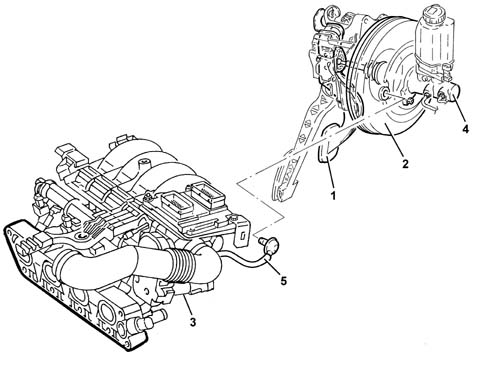

3330D brake vacuum system
- Path
- Descriptions > 33 BRAKING SYSTEM > 3330 HYDRAULIC BRAKING SYSTEM > 3330D brake vacuum system
- Kind
- system description
- Applies to
- all engines; all production periods
- Interactive page
- https://sloeber94.github.io/elrnDB-lYpsln/en/#/2427422
Applies to: all engines; all production periods
GENERAL VIEW

1 - Brake pedal 2 - Brake servo 3 - Intake manifold 4 - Brake control pump 5 - Vacuum connection pipe
Applies to: all engines; all production periods
The brake vacuum system consists of an intake manifold, (diesel versions come with a vacuum pump as well), which supplies (when the engine is running) the vacuum necessary to operate the brake servo (to which it is connected by a pipe) and the control pump or master cylinder fitted to the brake servo.
The pump is connected to the ABS hydraulic control unit by two pipes, each of which supplies one section of the cross-over circuit 3340 A(B.S. ANTI-LOCK BRAKING SYSTEM .).
On versions with ESP, the pump and control unit inlet lines are bigger because the fluid flow is higher through this type of system.
The pipes include a flexible section to facilitate fitting operations during service.
Applies to: all engines; all production periods
The system makes the braking action smoother and more powerful through the action of the brake servo. The brake servo is a pneumatic device that uses the vacuum set up in the intake manifold (when the engine is running), or vacuum pump for the diesel, to make the brake pedal act more powerfully on the pump so that braking action can be modulated more effectively.
If the vacuum system should fail, brake system operation is still ensured because the connecion between operating pedal and brake control pump remains operational.